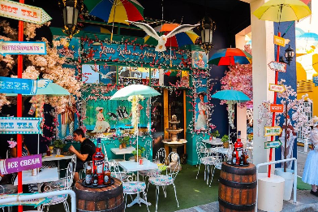
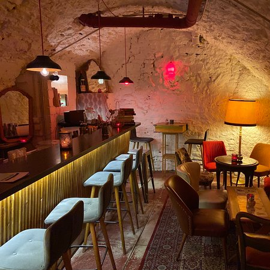

Go to Greem Cafe
From the interior to the tableware, Greem Café, with its unique charm, makes you feel like you stepped into a cartoon. By only painting the outlines of the whitewashed furniture in black, this unique cafe, with its 2D concept, creates the illusion of being in a cartoon. If you are looking for a cafe with a peculiar atmosphere, we recommend the Greem Café in Hongdae.

Go to Little Kook
Looking for the most Instagramable café in Athens? I’ve got you covered! One of the first things I do when heading to a new city is hop on TikTok and search for ‘Hidden gems’ and ‘Unusual things to do’ in that area. And that’s how I found Little Kook in Athens.
This café is undeniably the most Instagram-able coffee spot in the entire city. Once you step foot into Little Kook, you’ll understand why it has gained such a dedicated following of locals and tourists alike. It’s not just a café; it’s an experience. So, make sure your phone is fully charged and your filters are on point because your feed is about to get a serious dose of colour and crazy.

Go to Konrad Cafe & Bar
Born as a vintage clothing shop & Cafè. Serving coffees & delicious cakes. Over the years is been the Cafè that has brought to luxembourg original events such as open mic, stand up comedy, theatre performances and much more. Konrad is the real outstanding original Cafè & bar. It has a unique vibe very rare to find somewhere else in the city!